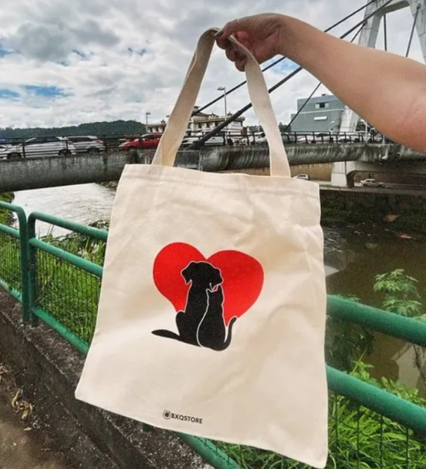

Lojinha ACAPRA
Você é do tipo que ama mostrar seu estilo com um toque de personalidade? Então, a Loja ACAPRA é o lugar perfeito para você! 🛍️
Aqui, temos camisetas e bolsas super estilosas com os logos de animais mais incríveis! 🦁🐯🐼 Cada peça foi pensada para quem tem atitude e ama se conectar com a natureza, ao mesmo tempo em que arrasa no look! ✨
💥 Por que escolher a ACAPRA? 💥
- ✔️ Estampas exclusivas que só você vai encontrar aqui!
- ✔️ Conforto, qualidade e estilo em cada peça.
- ✔️ Produtos feitos com muito carinho e respeito aos animais e à natureza.
🐾💚 Venha conhecer nossas peças e arrase por aí com muito mais estilo!
✨ Loja ACAPRA: O Estilo dos Animais para Quem Tem Atitude! ✨